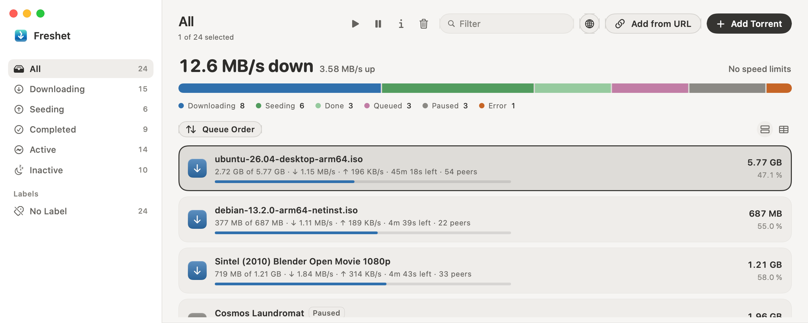

BitTorrent, made for the Mac.
Freshet is a free, open-source torrent client with every control a power user expects, in an app that looks and feels like it belongs on your Mac.

Highlights
Feels like a Mac app
Built with SwiftUI and AppKit: light and dark appearance, speeds in the menu bar, notifications, keyboard shortcuts and VoiceOver throughout.
A proven engine inside
Freshet runs on libtorrent, the open-source engine behind many torrent apps, with DHT, peer exchange, encryption, UPnP and v2 torrents.
Free, with nothing attached
No ads, no bundled offers, no accounts and no tracking. Freshet is MIT-licensed, and every line of it is on GitHub.
Speeds that fit your week
Paint a weekly plan hour by hour: full speed overnight, limited while you work, seeding only at the weekend. A transfer cap and seeding goals keep usage in check, and a banner tells you whenever a rule is holding transfers back.
- A 7 × 24 scheduler with four modes
- A transfer cap with a daily usage chart
- Global and per-torrent limits, and a separate upload rate for when nothing is downloading
Share what you make
Turn a file or folder into a torrent: add trackers and web seeds, choose v1, v2 or hybrid, and make it private if you like. Freshet hashes the files in the background, then starts seeding them for you.
- Tiered trackers and HTTP web seeds
- Automatic or hand-picked piece size
- Patterns to skip files you don't want to share
https://tracker.example.net/announce
Let feeds do the fetching
Subscribe to RSS and Atom feeds, then write filters with wildcards and exclusions. When something new matches, Freshet adds it on its own — to the folder and label you chose.
- Feeds checked on the schedule you set
- Filters with include and exclude patterns
- A save folder and label for each filter
And all the details
The controls power users reach for, each where you'd expect it.
Every way to add
Torrent files, magnet links, URLs and info-hashes, by drag and drop or from a watch folder.
Queue and priorities
Queue order, force start, file priorities, sequential download and labels.
Details on demand
Files, peers with their countries, trackers, a live speed chart and a log for each torrent.
Connection privacy
Protocol encryption, SOCKS and HTTP proxies, and IP filter files.
Reachable by peers
UPnP and NAT-PMP port mapping, with a banner when your port is closed.
When it's all done
Quit, sleep, shut down or restart the Mac, with a countdown you can cancel.
Menu bar and Dock
Live speeds and controls in the menu bar, a Dock badge and notifications.
Run a script
Start a program of your choice when a torrent finishes or changes state.
Help built in
A setup guide and searchable help topics, right inside the app.
Questions
Is Freshet really free?
Yes. Freshet is open source under the MIT License, with no ads, in-app purchases, accounts or bundled offers.
Which Macs can run it?
Any Mac with Apple silicon (M1 or later) running macOS 14 Sonoma or later. Intel Macs aren't supported.
macOS says it can't verify the app. How do I open it?
Freshet isn't notarized by Apple yet, so the first launch takes one extra step. Unzip the download, drag Freshet to Applications and open it once, then close the warning. Go to System Settings › Privacy & Security, scroll down to Security and click Open Anyway.
On macOS 14 you can instead Control-click Freshet and choose Open. Either way, macOS remembers your choice.
Does Freshet collect any data?
No. There are no analytics, crash reporters or accounts. Freshet connects only to what BitTorrent needs — peers, trackers and the DHT — and to the feeds and links you add. Your settings and torrents stay on your Mac.
How do I update to a new version?
Download the new version and replace the app in your Applications folder. Your torrents, labels and settings are kept. New versions are listed on the releases page.
Can I build it myself?
Yes. You need an Apple silicon Mac with Xcode or the Command Line Tools, and Homebrew:
brew install boost openssl@3
git clone https://github.com/isura-sandeepa/freshet.git
cd freshet
bash Scripts/make-app.shThe first build compiles libtorrent and takes a few minutes. The app appears in build/Freshet.app.
Where do I report a problem?
Open an issue on GitHub with your macOS version and the steps that lead to the problem.
Get Freshet
Free for Macs with Apple silicon and macOS 14 or later.